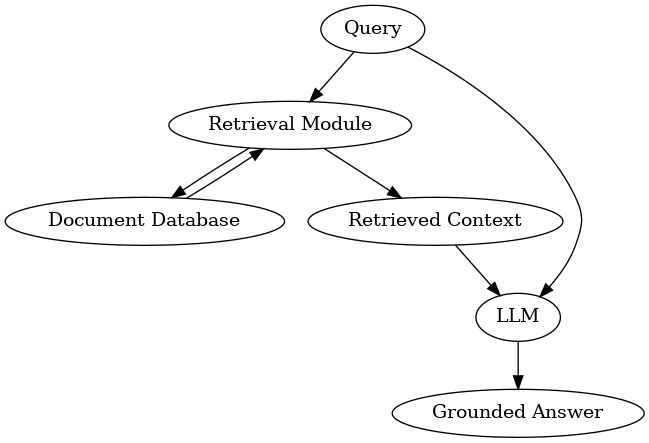

Module 3: Building a Simple RAG Pipeline#
Part of the RCD Workshops series: Retrieval-Augmented Generation (RAG) for Advanced Research Applications
In this module, we’ll connect retrieval and generation to build a working RAG pipeline end-to-end. We’ll use our small example corpus (from Module 2), a retrieval component, and an 8B LLM, to show how RAG works in practice.

Dataset: Demo Corpus#
We will use a tiny mixed-domain corpus (AI, Climate, Biomedical, Materials) stored in data/demo_corpus.jsonl.
from pathlib import Path
import pandas as pd
DATA_PATH = 'data/demo_corpus.jsonl'
df = pd.read_json(DATA_PATH, lines=True)
docs = df.to_dict('records')
print(f'Loaded {len(docs)} docs from {DATA_PATH}')
display(df.head())
Loaded 18 docs from data/demo_corpus.jsonl
| id | title | abstract | authors | year | topics | categories | source_url | |
|---|---|---|---|---|---|---|---|---|
| 0 | 2508.05366 | Can Language Models Critique Themselves? Inves... | Agentic Retrieval Augmented Generation (RAG) a... | [Samy Ateia, Udo Kruschwitz] | 2025 | [NLP, Retrieval, Language Model, Biomedical] | [cs.CL] | http://arxiv.org/abs/2508.05366v1 |
| 1 | 2508.07326 | Nonparametric Reaction Coordinate Optimization... | Rare but critical events in complex systems, s... | [Polina V. Banushkina, Sergei V. Krivov] | 2025 | [ML, Climate] | [physics.chem-ph, cs.LG, math.PR, physics.comp... | http://arxiv.org/abs/2508.07326v1 |
| 2 | 2508.07654 | MLego: Interactive and Scalable Topic Explorat... | With massive texts on social media, users and ... | [Fei Ye, Jiapan Liu, Yinan Jing, Zhenying He, ... | 2025 | [Databases, IR] | [cs.DB, cs.IR] | http://arxiv.org/abs/2508.07654v1 |
| 3 | 2508.07798 | Generative Inversion for Property-Targeted Mat... | The design of shape memory alloys (SMAs) with ... | [Cheng Li, Pengfei Danga, Yuehui Xiana, Yumei ... | 2025 | [Materials, ML] | [cond-mat.mtrl-sci, cs.LG] | http://arxiv.org/abs/2508.07798v1 |
| 4 | 2508.08140 | Data-Efficient Biomedical In-Context Learning:... | Recent progress in large language models (LLMs... | [Jun Wang, Zaifu Zhan, Qixin Zhang, Mingquan L... | 2025 | [NLP, Retrieval, Language Model, Biomedical] | [cs.CL] | http://arxiv.org/abs/2508.08140v1 |
3.1 Setting up the LLM#
For RAG, we need a language model that can read our prompt and generate an answer using retrieved context. We’ll use Qwen-8B (open-weight, Hugging Face) for this pipeline.
Note: You need a GPU (ideally A100 or similar) to load a larger model at usable speed.
We’ll use the transformers library. Loading may take a while.
from transformers import AutoTokenizer, AutoModelForCausalLM
model_name = 'Qwen/Qwen3-8B'
custom_cache = '/project/rcde/cehrett/rag_workshop/models/'
tokenizer = AutoTokenizer.from_pretrained(model_name, use_fast=False, trust_remote_code=True)
model = AutoModelForCausalLM.from_pretrained(
model_name,
cache_dir=custom_cache,
device_map='auto',
dtype='auto'
)
MODEL_READY = True
print(f'Loaded LLM: {model_name}')
---------------------------------------------------------------------------
ModuleNotFoundError Traceback (most recent call last)
Cell In[2], line 1
----> 1 from transformers import AutoTokenizer, AutoModelForCausalLM
2 model_name = 'Qwen/Qwen3-8B'
3 custom_cache = '/project/rcde/cehrett/rag_workshop/models/'
ModuleNotFoundError: No module named 'transformers'
from sentence_transformers import SentenceTransformer
import numpy as np
import faiss
# Build chunked passage index from abstracts
def chunk_text(text, max_chars=400):
text = (text or '').strip()
if not text:
return []
return [text[i:i+max_chars].strip() for i in range(0, len(text), max_chars)]
encoder = SentenceTransformer('sentence-transformers/all-MiniLM-L6-v2')
chunk_texts = []
chunk_meta = []
for d in docs:
abs_text = d.get('abstract', '')
pieces = chunk_text(abs_text, max_chars=400)
for j, t in enumerate(pieces):
if not t:
continue
chunk_texts.append(t)
chunk_meta.append({'doc_id': d.get('id'), 'title': d.get('title'), 'chunk_id': j})
embs = encoder.encode(chunk_texts)
embs = np.array([v/np.linalg.norm(v) for v in embs], dtype='float32')
index = faiss.IndexFlatIP(embs.shape[1])
index.add(embs)
# Example question for climate economics
query = "According to recent studies, how exactly does replanting trees to replenish forests help to fight against climate change?"
q = encoder.encode([query])[0]
q = (q/np.linalg.norm(q)).astype('float32')
D, I = index.search(np.array([q]), k=2)
retrieved_indices = I[0]
print('Retrieved chunk indices:', retrieved_indices)
retrieved_texts = [chunk_texts[i] for i in retrieved_indices]
retrieved_meta = [chunk_meta[i] for i in retrieved_indices]
print('Top-1 Retrieved text snippet:', retrieved_texts[0][:160].replace('\n',' '), '...')
Building the Prompt#
To maximize answer quality, prompt your LLM with clear instructions and insert the most relevant docs just before the user’s question. A simple format is to list docs like [Document 1], [Document 2], then give the question.
from utils import create_answer_box
create_answer_box('Please describe your level of familiarity with LLM prompting concepts, including: system prompts vs. user prompts, chat templates, and so on.', question_id='mod_3_prompt_background')
# Build messages for chat template aware models (e.g., Qwen3)
system_msg = (
"You are a research assistant. Ground your answer to the user's query in the provided documents. "
"Cite document numbers inline when useful. If unsure, say you don't know."
)
docs_lines = []
for i, text in enumerate(retrieved_texts, start=1):
docs_lines.append(f'[Document {i}]\n{text}\n')
context_block = "".join(docs_lines)
user_msg = f"## Context:\n{context_block}\n\n## Question:\n{query}"
messages = [
{ 'role': 'system', 'content': system_msg },
{ 'role': 'user', 'content': user_msg },
]
# Render with chat template
rendered_prompt = tokenizer.apply_chat_template(
messages, tokenize=False, add_generation_prompt=True)
print('Prompt (rendered):\n')
print(rendered_prompt)
LLM: Answering with Retrieved Information#
Now, send the composed prompt to your language model.
This step may be slow unless you’re on a GPU-ready machine, but shows the full RAG loop! If working on CPU or want to skip, use a smaller LLM.
input_ids = tokenizer(rendered_prompt, return_tensors='pt').input_ids.to(model.device)
outputs = model.generate(input_ids, max_new_tokens=512, temperature=0.2, do_sample=False)
answer = tokenizer.decode(outputs[0, input_ids.shape[1]:], skip_special_tokens=True)
print('\nGenerated Answer:', answer.strip())
Try it yourself!#
Modify the query above (in the RAG pipeline code cell) to something your document can answer – or to something none of the docs cover.
What happens? How does the retrieval affect the model’s output?
from utils import create_answer_box
create_answer_box('In the above code in this notebook, what does the line `q = encoder.encode([query])[0]` do?', question_id='mod_3_encoder_question')
create_answer_box('In the above code in this notebook, what does the line `D, I = index.search(np.array([q]), k=2)` do?', question_id='mod_3_index_question')
Note on Prompt Lengths & Context: Models like Qwen3 support long context windows (up to 32K tokens or more), but you often need to truncate or focus your retrieved docs. Too much, and the model may ignore key info; too little, and you could miss relevant context.
That’s why retrieval quality is just as important as the LLM itself!
Congratulations—You now have a basic, working RAG pipeline! In the next module, we’ll explore how to improve retrieval quality and tackle more advanced scenarios.
Streamlined RAG (Library-Based)#
The above walkthrough showed a ground-up RAG pipeline. Below is a concise version using a popular orchestration library to wire up embeddings, a vector store, a retriever, and an LLM chain.
This mirrors what many teams do in practice.
from langchain_huggingface import HuggingFaceEmbeddings
from langchain_community.vectorstores import FAISS as LCFAISS
from langchain_text_splitters import RecursiveCharacterTextSplitter
from langchain_core.documents import Document
from transformers import pipeline as hf_pipeline
# --- You must define these beforehand: ---
# docs: iterable of dicts with keys 'id','title','year','abstract'
# model, tokenizer: loaded HF model + tokenizer (prefer an *Instruct/Chat* variant)
# query: the user query string
print('Building vector store with LangChain (auto-chunk + FAISS) ...')
emb = HuggingFaceEmbeddings(model_name='sentence-transformers/all-MiniLM-L6-v2')
# Wrap raw records as LangChain Documents
raw_docs = []
for d in docs:
text = (d.get('abstract') or '').strip()
if not text:
continue
md = {'doc_id': d.get('id'), 'title': d.get('title'), 'year': d.get('year')}
raw_docs.append(Document(page_content=text, metadata=md))
print(f'- Loaded {len(raw_docs)} source documents')
# Split text
splitter = RecursiveCharacterTextSplitter(
chunk_size=400, chunk_overlap=40, separators=['\n\n', '\n', ' ', '']
)
docs_split = splitter.split_documents(raw_docs)
print(f'- Created {len(docs_split)} chunks (chunk_size=400, overlap=40)')
# Vector store
vs = LCFAISS.from_documents(docs_split, embedding=emb)
retriever = vs.as_retriever(search_type='similarity', search_kwargs={'k': 2})
print('Retrieving context...')
relevant_docs = retriever.get_relevant_documents(query)
context_text = "\n\n".join(f"[{i+1}] {d.page_content}" for i, d in enumerate(relevant_docs))
print('Wrapping Transformers model as an LLM pipeline...')
# Ensure pad token is set (avoids generation quirks)
if tokenizer.pad_token_id is None:
if tokenizer.eos_token_id is not None:
tokenizer.pad_token = tokenizer.eos_token
else:
tokenizer.add_special_tokens({'pad_token': '[PAD]'})
model.resize_token_embeddings(len(tokenizer))
gen = hf_pipeline(
task='text-generation',
model=model,
tokenizer=tokenizer,
max_new_tokens=512,
temperature=0.2,
do_sample=False,
return_full_text=False, # <- don't echo the prompt
)
# Build chat messages and render with the model's chat template
system_msg = (
"You are a research assistant. Use the provided context to answer. "
"Cite titles when helpful. If unsure, say you don't know."
)
user_msg = (
f"## Context:\n{context_text}\n\n"
f"## Question:\n{query}\n\n"
"Provide a concise answer."
)
# If your tokenizer has a chat template (most *Instruct/Chat* models do), use it:
messages = [
{"role": "system", "content": system_msg},
{"role": "user", "content": user_msg},
]
prompt_text = tokenizer.apply_chat_template(
messages,
tokenize=False,
add_generation_prompt=True, # ensures the model starts the assistant turn
)
print('Querying model...')
out = gen(prompt_text)
answer_text = out[0]["generated_text"].strip()
print('\nAnswer:\n', answer_text)
print('\nTop sources:')
for i, d in enumerate(relevant_docs, 1):
md = getattr(d, 'metadata', {}) or {}
title = md.get('title', '') or ''
doc_id = md.get('doc_id', '') or ''
print(f'- Source {i}: {title[:80]} (id={doc_id})')